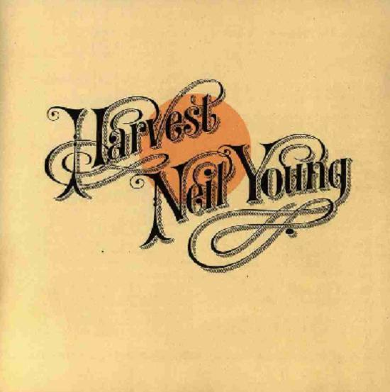

Neil Young - Storytone - Deluxe
Geplaatst door: Jodi Smit op Oktober 30, 2014
Genre: pop
Weinig artiesten zijn zo onvoorspelbaar als Neil Young. Na zijn doorbraak met The Buffalo Springfield koos Young – zijn uitstapjes met Crosby, Stills and Nash daargelaten- Young voor een solocarriere zonder concessies. Was zijn eerste soloplaat (1968) nog rijk gearrangeerd door Jack Nitzsche, zo werd de opvolger Everybody Knows this is Nowhere (1969) gekenmerkt door stevige songs, samen met de band Crazy Horse. En hoewel Young op gezette tijden samen met hen stevige platen maakt, zijn de uitstapjes van Young legio. Hij wist een commerciële carriere met het album Harvest (1972) bewust om zeep te helpen met het grillige maar imposante Time Fades Away (1973). Na respectievelijk een elektronische (Trans, 1982), een rockabilly (Everybody’s rocking, 1983) en een countryplaat (Old Ways, 1985) werd Young zelfs door zijn eigen platenbaas, David Geffen, aangeklaagd wegens het maken van oncommerciële muziek.
Hij wist een commerciële carriere met het album Harvest (1972) bewust om zeep te helpen met het grillige maar imposante Time Fades Away (1973).
Vlak na het aankondigen van de door Young ontwikkelde ultieme digitale download, Pono, (Young’s heeft zijn afkeer voor de CD en mp3 nooit onder stoelen of banken gestoken), verrastte Young zijn fans dit jaar met een verzameling songs, opgenomen op een Voice-o-graph uit 1947. En dan is er nu ineens het album Storeytone. Nadat Young solo een aantal nummers had opgenomen (toegevoegd op de deluxe-edition) werden de opnames gearrangeerd voor een 92-koppig orkest en een big band. Nu werkte Young incidenteel al met orkesten op Harvest, maar een geheel orkestraal album is een nieuwe verrassende wending. Bevlogen, soms gevoelig en dan weer rockend: het komt allemaal langs op Storytone. Gelukkig zijn er nog artiesten die doen wat ze willen, of je het nu mooi vindt of niet.
Tracklist:
- Plastic Flowers (Solo)
- Plastic Flowers
- Who's Gonna Stand Up? (Solo)
- Who's Gonna Stand Up?
- I Want To Drive My Car (Solo)
- I Want To Drive My Car
- Glimmer (Solo)
- Glimmer
- Say Hello To Chicago (Solo)
- Say Hello To Chicago
- Tumbleweed (Solo)
- Tumbleweed
- Like You Used To Do (Solo)
- Like You Used To Do
- I'm Glad I Found You (Solo)
- I'm Glad I Found You
- When I Watch You Sleeping (Solo)
- When I Watch You Sleeping
- All Those Dreams (Solo)
- All Those Dreams